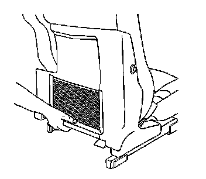

Front Seat Back Trim Replacement
Front Seat Back Trim Replacement
Removal Procedure

1. Grasp the top portion of the seat back trim panel and pull out to release the push-in fasteners.
2. Firmly lift upwards to remove the seat back trim from the seat assembly.
Installation Procedure
1. Position the lower hooks on the seat back trim panel to the seat assembly.
2. Firmly push inwards on the top of the trim cover to secure the push-in fasteners.